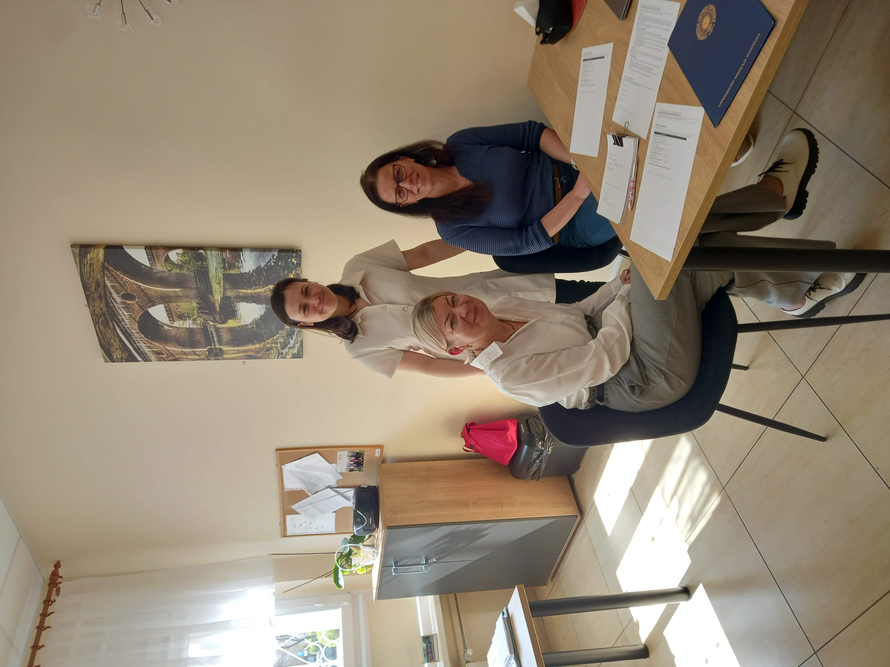

AI w Edukacji
Raport Końcowy
Jak 6 studentów zaprojektowało i wdrożyło działającą aplikację dydaktyczną dla szkół podstawowych — w 4 dni, bez pisania kodu ręcznie, przy użyciu narzędzi sztucznej inteligencji.
Skąd wziął się projekt i czemu służy?
Projekt powstał w odpowiedzi na realne przeciążenie nauczycieli klas 1–3, którzy jednocześnie pełnią rolę wykładowcy, wychowawcy, mediatora i animatora — bez narzędzi, które odciążyłyby ich w codziennej pracy.
AI w Edukacji to projekt realizowany przez 6-osobowy zespół studentów Kognitywistyki i Psychologii (S1) Uniwersytetu Mikołaja Kopernika w Toruniu. Cel projektu to zaprojektowanie i pilotażowe wdrożenie aplikacji dydaktyczno-rekreacyjnej wspierającej pracę w klasach edukacji wczesnoszkolnej.
Aplikacja odpowiada na trzy konkretne potrzeby zidentyfikowane w ankiecie przeprowadzonej wśród nauczycieli:
Odciążenie nauczyciela
Przejęcie przez aplikację części aktywności klasowych wymagających dotąd bezpośredniego zaangażowania pedagoga.
Zaangażowanie uczniów
Elementy gier i rywalizacji jako mechanizm motywacyjny — nauka przez zabawę dopasowana do klas 1–3.
Regulacja emocjonalna
Wyciszenie klasy jako realne narzędzie pedagogiczne, zaimplementowane bezpośrednio w interfejsie.
Współpraca ze szkołą
Projekt obejmuje współpracę z realną szkołą podstawową. Odbyły się dwa spotkania — z dyrekcją oraz szkolenie nauczycielek — przekazano dokumenty formalne i przeprowadzono pilotaż z udziałem klas 1a, 1c, 2a i 3c.


Skład zespołu
Narzędzia AI i metodologia pracy
Zespół wykorzystał 5 narzędzi AI, każde przypisane do konkretnego etapu pracy. Projekt stanowi praktyczny dowód na dostępność tego rodzaju rozwiązań dla osób bez zaplecza technicznego.
Narzędzia użyte w projekcie
Wnioski z pracy z AI
Pięć modułów — jedno narzędzie dydaktyczne
Aplikacja powstała w ciągu czterech dni intensywnych prac i jest wynikiem świadomej selekcji spośród znacznie szerszego zbioru pierwotnych założeń.
Pierwotna koncepcja zakładała trzy tematyczne światy z rozbudowanym drzewem funkcji. Redukcja zakresu była decyzją projektową, nie niepowodzeniem. Kryteria selekcji: nauczyciel musi chcieć tego używać, dzieci muszą to lubić, narzędzie musi dać się zbudować w rozsądnym czasie.

Prawda czy Fałsz?
Interaktywny zestaw zadań weryfikacyjnych wyświetlanych na tablicy. Uczniowie oceniają zaskakujące twierdzenia, co trenuje krytyczne myślenie i rozbudza ciekawość poznawczą. Po trzech poprawnych odpowiedziach aktywuje się nagroda w postaci żartu — element motywacyjny rozluźniający atmosferę.

Mgła
Trzystopniowa misja klasowa łącząca regulację emocjonalną z budowaniem poczucia wspólnoty. Uczniowie kolejno: łączą wyrazy w pary dotyczące zasad współpracy, wykonują ćwiczenie oddechowe ze smokiem, rozwiązują zagadkę logiczną. Finałem jest edukacyjna nagroda o neuronach lustrzanych.

Architekci na Czas
Matematyczna gra rywalizacyjna dla dwóch drużyn. Poprawne odpowiedzi na zadania arytmetyczne (dodawanie, mnożenie) przekładają się na wizualne budowanie wieży z klocków. Moduł zawiera panel nauczyciela z funkcją Ciszo-Metr — animacją pauzującą grę przy nadmiernym hałasie w klasie.

Literowe Memory
Klasyczna gra pamięciowa w wersji językowej angażująca całą klasę jednocześnie. Dostępne tryby: wielka/mała litera (klasa 1, I semestr), litera/obrazek (klasa 1, II semestr) oraz sylaby tworzące słowa (klasa 2). System rejestruje rekordy klasy, co motywuje do powtarzania.

Oddech Smoka
Krótkie ćwiczenie oddechowe prowadzone przez animowanego smoka, oparte na trójfazowym cyklu: wdech (2 s) → zatrzymanie (3 s) → wydech (3 s), powtórzonym trzykrotnie. Służy wyciszeniu klasy i przywróceniu koncentracji. Przewodnik proponuje konkurs na imię smoka przed pierwszym użyciem — mechanizm budujący poczucie współwłasności narzędzia wśród uczniów.

Wypróbuj aplikację
Działająca aplikacja osadzona poniżej. Możesz też otworzyć ją w pełnym oknie: apka-klasy-1-3.netlify.app.
Pilotaż — maj 2026
Zespołowi udało się zaprojektować i wdrożyć działającą aplikację złożoną z 5 modułów, przeprowadzić szkolenie nauczycielek oraz zrealizować pilotaż z udziałem klas 1a, 1c, 2a i 3c.
Aplikacja została zbudowana bez ręcznego pisania kodu, z wykorzystaniem narzędzi AI, co stanowi istotny dowód na dostępność tego typu rozwiązań dla osób bez zaplecza technicznego.
Szkolenie nauczycielek odbyło się 27 kwietnia 2026. Ankiety ewaluacyjne przekazano 28 maja, sesje pilotażowe przeprowadzono 29 maja 2026 — zebrano 4 wypełnione ankiety od nauczycielek klas 1a, 1c, 2a i 3c.
Aplikacja była projektowana z myślą o uczniach klasy 2. Udział nauczycielek klas 1 i 3 nastąpił bez wcześniejszego uzgodnienia z zespołem — należy uwzględnić przy interpretacji wyników.
Ogólna ocena sesji we wszystkich czterech przypadkach wyniosła 4–5 punktów w każdej kategorii. Wszystkie 5 modułów było używanych na lekcjach. Zaangażowanie uczniów oraz przydatność narzędzia dla nauczyciela oceniono konsekwentnie na poziomie 4–5/5. Instrukcja obsługi oceniona jako w pełni wystarczająca. W jednej z ankiet odnotowano odręczną uwagę wskazującą element do poprawy.
Wyniki ewaluacji
Obserwacje z pilotażu
Uczniowie rozumieli polecenia
Bez dodatkowych wyjaśnień ze strony nauczyciela — w każdym testowanym roczniku.
Rywalizacja w Architektach
Elementy rywalizacji wywoływały bardzo pozytywną reakcję klasy.
Oddech Smoka wyciszał klasę
Skutecznie w trzech na cztery przypadki.
Uwagi konstruktywne nauczycielek
Wśród uwag konstruktywnych wskazano: zbyt niski poziom trudności zadań w klasie 3, powtarzalność zadań matematycznych w module Architekci na Czas, potrzebę urozmaicenia grafiki liter w module Literowe Memory oraz powtarzające się ciekawostki w module Prawda czy Fałsz.
Dokumentacja ankiet ewaluacyjnych


Co przekazujemy dalej
Projekt zostaje zamknięty. Poniżej zestawienie zasobów wytworzonych w jego trakcie, które pozostają dostępne i mogą być swobodnie wykorzystywane.
Działająca aplikacja webowa
Dostępna pod stałym adresem, z pełną dokumentacją techniczną w repozytorium GitHub.
🚀 Otwórz aplikacjęPrzewodnik użytkownika
Opracowany z myślą o nauczycielach bez zaplecza technicznego — wystarczy do samodzielnego użycia bez wsparcia ze strony zespołu.
📖 Pobierz przewodnikMateriały szkoleniowe i ankieta ewaluacyjna
Materiały szkoleniowe i ankieta gotowe do użycia.
Wiedza procesowa — workflow AI
Udokumentowany workflow budowania aplikacji dydaktycznej przy użyciu narzędzi AI (Lovable + Claude Code), który może zostać odtworzony bez specjalistycznego przygotowania technicznego.
Raport, wnioski i przykładowe projekty
Raport i wnioski z projektu, inne przykładowe projekty z tematyki historycznej oraz źródła do narzędzi AI w polskich szkołach.
📑 Ten raportPełny cykl ewaluacyjny
Pilotaż przeprowadzony, ankiety zebrane. Projekt zostaje zamknięty na tym etapie.
Projekt dowodzi, że tego typu narzędzia są dziś dostępne dla studentów humanistycznych kierunków — czas i koszt wdrożenia są niskie, a bariera wejścia niższa niż powszechnie się zakłada.
Leksykon AI — przewodnik dla nauczycieli
W ramach projektu opracowano leksykon AI adresowany do nauczycieli. Obejmuje opis modeli językowych (LLM), narzędzi dydaktycznych (NotebookLM, Gamma.app, Quizizz, Kahoot) oraz zasady skutecznego promptowania.
Modele często ignorują błędy wynikające z wielkości liter (np. „pomorze" zamiast „Pomorze"), przedkładając ogólne znaczenie semantyczne nad ścisłą ortografię — efekt mechanizmu uwagi tokenizatora.
Cel — jasno określ zadanie (np. „Stwórz 5 pytań zamkniętych"). Kontekst — podaj grupę docelową i temat (np. „dla uczniów klasy 5"). Precyzja — unikaj ogólników; zamiast „o zwierzętach" napisz „o ssakach morskich".
Polecane narzędzia AI do pracy w szkole


🎉 Prezentacja przekazana szkole
W ramach materiałów szkoleniowych zespół przygotował dedykowaną prezentację dla nauczycielek — skondensowane wprowadzenie do możliwości AI w edukacji wczesnoszkolnej.
Co z tego wynika?
Projekt zostaje uznany za zamknięty. Poniżej wnioski ogólne.
Da się łatwo zrobić narzędzie, które — choć nie jest doskonałe i można je poprawić w kilku aspektach — okazuje się przydatnym narzędziem dla docelowych nauczycieli i uczniów.
Rola kontekstu jest kluczowa
Narzędzie AI pozbawione dostępu do struktury projektu traci znaczną część użyteczności. Małe, izolowane zadania oraz szczegółowy plan przed kodowaniem istotnie redukowały liczbę błędów i przyspieszały pracę.
Timing w szkołach ma znaczenie
Okres maj–czerwiec okazał się mocno zagospodarowaną porą na wdrożenia pilotażowe. Tego typu projekty wymagają wcześniejszego zakotwiczenia w kalendarzu szkolnym, najlepiej w okresie jesiennym.
Pliki i zasoby projektu
Wszystkie dokumenty wytworzone w trakcie projektu. Kliknij, aby otworzyć lub pobrać.
AI buduje raport o AI
Na podstawie zdjęcia slajdu z wytycznymi, zebranych materiałów i dostępu do Claude Code — raport powstał z użyciem narzędzi AI.
Planowanie — LLM generuje strukturę i prompty
LLM dostał wytyczne i wypluł strukturę raportu oraz gotowe prompty dla każdej sekcji.
Treść — plik Word odpowiadający na każdy punkt
Powstał plik Word odpowiadający na każdy punkt ze slajdu. Tekst doszlifowany przez AI.
Pogłębianie — AI zadaje pytania o projekt
LLM dostał zadanie „wymyśl pytania nt. ważnych kwestii projektu, które powinny znaleźć się w raporcie". Odpowiedzi trafiły do Worda — do specjalnie utworzonego folderu „Raport Interaktywny".
Porządkowanie — podfoldery tematyczne
Folder główny podzielono na podfoldery tematyczne, gdzie wrzucono teksty, zdjęcia i resztę materiałów.
Kodowanie — Claude Code wyczarowuje stronę
Claude Code dostał dostęp do folderu i dwa zdania opisu stylu. Wyczarował z tego interaktywną stronę, która od razu wylądowała na GitHubie z publicznym linkiem.